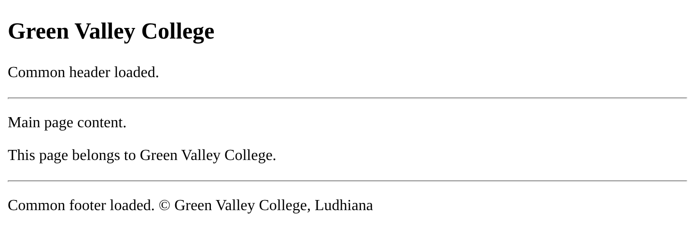

Write a PHP code to demonstrate file inclusion function – include().
Program 4.5: Demonstrating include
Concepts used
The include statement, reusable files, relative paths, variables shared between files.
Test data: College name Green Valley College, set in the header file; page content prepared in the main file.
Logic
- Create
includes/header.php, which stores the college name in a variable and prints the common header. - Create
includes/footer.php, which prints the common footer. - In
include-demo.php, include the header, print the main content using the variable from the header, and include the footer.
Code
Create a folder named includes next to the main file, and save the shared files in it.
<!DOCTYPE html><html lang="en"><head> <meta charset="UTF-8"> <title>include Demonstration</title></head><body> <?php include "includes/header.php"; echo "<p>Main page content.</p>"; echo "<p>This page belongs to $siteName.</p>"; include "includes/footer.php"; ?></body></html>
<?php// Common header used by many pages$siteName = "Green Valley College";?><h2><?php echo $siteName; ?></h2><p>Common header loaded.</p><hr>
<hr><p>Common footer loaded. © Green Valley College, Ludhiana</p>
Output
These are real screenshots, taken by running the program with the test data.

Understanding the output
The heading and the first message come from header.php, the next two lines from include-demo.php and the last line from footer.php; the horizontal lines represent the <hr> elements. The page source in the browser shows one continuous HTML document, with no trace of the three separate files or of the include statements. Any other page that includes the same two files shows the same header and footer.
How it works
When include-demo.php is requested, PHP reaches the first include statement and inserts includes/header.php. The PHP block of the header stores the college name in $siteName, and its HTML part outputs the heading, the message "Common header loaded." and a horizontal line. Control then returns to the main file, which prints its own content. The variable $siteName, created in the included file, is available in the main file, so the second paragraph shows the college name. Finally, the footer file is included and its HTML is output.
Run it yourself
Real PHP 8.3 runs inside your browser (nothing is sent to a server). Forms, links, cookies and sessions work as they do in XAMPP. The first run downloads PHP, so it needs internet and takes a few seconds.
Try this:
- Change the college name in
includes/header.phpand run again. - Change the first include to
include "includes/head.php";(a wrong name). The page shows a warning but continues.
Running it in XAMPP
Create the folder includes inside C:\xampp\htdocs\phpbook\ch04, save the three files in their folders, and open http://localhost/phpbook/ch04/include-demo.php. The shared files are not opened directly; they are used through the main file.
Common mistakes
- Writing the path as
header.phpwhen the file is inside the includes folder, which produces a warning and leaves out the header. - Omitting <?php in an included file, so that its PHP code is printed as text.
- Using a variable of the included file before the include statement.